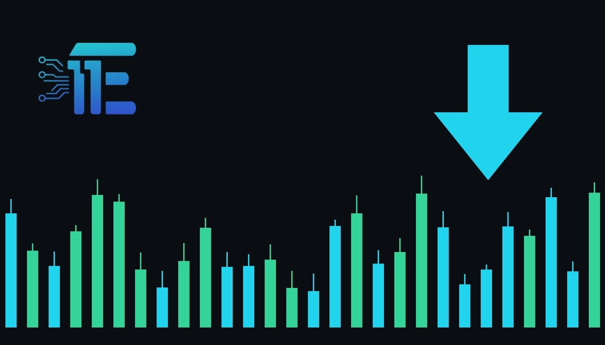

RBA Raises Rates to 18-Year High to Curb InflationRBA ដំឡើងអត្រាការប្រាក់ដល់កម្រិតខ្ពស់បំផុតក្នុងរយៈពេល 18 ឆ្នាំដើម្បីទប់ទល់អតិផរណា
XAU/USD impact: ▼ Bearishផលប៉ះពាល់លើ XAU/USD: ▼ ធ្លាក់

The Reserve Bank of Australia lifted its benchmark interest rate to an 18-year peak in its fifth hike this year, meeting economist forecasts. Sustained monetary tightening lifts yield expectations globally, creating potential headwinds for non-yielding gold.
ធនាគារកណ្តាលអូស្ត្រាលីបានដំឡើងអត្រាការប្រាក់គោលដល់កម្រិតខ្ពស់បំផុតក្នុងរយៈពេល 18 ឆ្នាំនៅក្នុងការដំឡើងលើកទី 5 ក្នុងឆ្នាំនេះ ស្របតាមការព្យាករណ៍របស់អ្នកសេដ្ឋកិច្ច។ ការបន្តរឹតបន្តឹងគោលនយោបាយរូបិយវត្ថុជាសកលបានបង្កើនទិន្នផល ដែលអាចដាក់សម្ពាធលើមាសដែលគ្មានការប្រាក់។
The Reserve Bank of Australia delivered another monetary policy tightening step, raising its benchmark interest rate to an 18-year high in an ongoing effort to combat elevated inflation. The decision matched expectations among economists polled by Reuters and marked the central bank's fifth interest rate increase this year.
ធនាគារកណ្តាល Reserve Bank of Australia (RBA) បានបោះជំហានមួយទៀតក្នុងការរឹតបន្តឹងគោលនយោបាយរូបិយវត្ថុ ដោយបានដំឡើងអត្រាការប្រាក់គោលរបស់ខ្លួនដល់កម្រិតខ្ពស់បំផុតក្នុងរយៈពេល 18 ឆ្នាំ ដើម្បីប្រយុទ្ធប្រឆាំងនឹងអតិផរណាដែលនៅតែមានកម្រិតខ្ពស់។ សេចក្តីសម្រេចនេះគឺស្របតាមការរំពឹងទុករបស់អ្នកសេដ្ឋកិច្ចដែលត្រូវបានស្ទង់មតិដោយ Reuters ហើយវាជាការដំឡើងអត្រាការប្រាក់លើកទី 5 របស់ធនាគារកណ្តាលនេះនៅក្នុងឆ្នាំនេះ។
For gold traders monitoring XAU/USD, central bank interest rate decisions outside the United States provide important insight into the global monetary policy cycle. When major monetary authorities push borrowing costs to multi-year peaks, sovereign bond yields across worldwide markets tend to remain supported. Because gold is a non-yielding asset, elevated interest rates worldwide increase the opportunity cost of holding bullion compared to interest-bearing cash or sovereign debt instruments.
សម្រាប់អ្នកជួញដូរមាសដែលតាមដានគូអត្រាប្តូរប្រាក់ XAU/USD សេចក្តីសម្រេចលើអត្រាការប្រាក់របស់ធនាគារកណ្តាលក្រៅពីសហរដ្ឋអាមេរិកបានផ្តល់ការយល់ដឹងយ៉ាងសំខាន់អំពីវដ្តគោលនយោបាយរូបិយវត្ថុសកល។ នៅពេលដែលអាជ្ញាធររូបិយវត្ថុធំៗរុញច្រានថ្លៃដើមនៃការខ្ចីប្រាក់ទៅកាន់កម្រិតខ្ពស់បំផុតក្នុងរយៈពេលជាច្រើនឆ្នាំ ទិន្នផលមូលបត្របំណុលរដ្ឋាភិបាលនៅទូទាំងទីផ្សារសកលជាទូទៅទទួលបានការគាំទ្រ។ ដោយសារមាសជាទ្រព្យសកម្មដែលមិនផ្តល់អត្រាការប្រាក់ ការកើនឡើងនៃអត្រាការប្រាក់នៅទូទាំងពិភពលោកបានបង្កើនថ្លៃដើមឱកាសនៃការកាន់កាប់មាស បើប្រៀបធៀបទៅនឹងសាច់ប្រាក់ ឬឧបករណ៍បំណុលរដ្ឋាភិបាលដែលទទួលបានការប្រាក់។
In addition to yield dynamics, monetary actions by the Reserve Bank of Australia affect foreign exchange markets and cross-currency relationships. Adjustments against the US dollar can indirectly sway broader currency market conditions and dollar momentum, which serves as the primary denomination for physical gold transactions. Global tightening moves also highlight how tenaciously central banks are working to suppress persistent inflationary pressures.
ក្រៅពីចលនាទិន្នផល សកម្មភាពគោលនយោបាយរបស់ធនាគារកណ្តាលអូស្ត្រាលីក៏ជះឥទ្ធិពលដល់ទីផ្សារប្តូរប្រាក់បរទេស និងទំនាក់ទំនងរវាងរូបិយប័ណ្ណនានាផងដែរ។ ការប្រែប្រួលធៀបនឹងប្រាក់ដុល្លារអាមេរិកអាចជះឥទ្ធិពលដោយប្រយោលលើលក្ខខណ្ឌទីផ្សាររូបិយប័ណ្ណទូលំទូលាយ និងសន្ទុះនៃ USD ដែលជារូបិយប័ណ្ណចម្បងក្នុងការកំណត់តម្លៃមាស។ វិធានការរឹតបន្តឹងជាសកលក៏បង្ហាញពីការខិតខំប្រឹងប្រែងយ៉ាងមុតមាំរបស់ធនាគារកណ្តាលក្នុងការទប់ស្កាត់សម្ពាធអតិផរណាដែលកំពុងបន្តកើតមាន។
Looking forward, market conditions will depend heavily on the trajectory of global monetary policy and inflation prints. If central banks maintain prolonged restrictive policies and nominal yields stay firm, non-yielding precious metals like gold may experience downward pressure. Conversely, if persistent inflation or tightening-induced economic strains prompt a shift toward capital preservation, gold could find renewed support as a traditional store of value. Traders will continue monitoring upcoming inflation releases and central bank guidance for further policy direction.
សម្រាប់ទស្សនវិស័យខាងមុខ លក្ខខណ្ឌទីផ្សារនឹងពឹងផ្អែកយ៉ាងខ្លាំងលើគន្លងនៃគោលនយោបាយរូបិយវត្ថុសកល និងតួលេខអតិផរណា។ ប្រសិនបើធនាគារកណ្តាលនៅតែបន្តរក្សាគោលនយោបាយរឹតបន្តឹងយូរអង្វែង ហើយទិន្នផលនៅតែរឹងមាំ នោះលោហៈធាតុមានតម្លៃដូចជាមាសអាចប្រឈមមុខនឹងសម្ពាធធ្លាក់ចុះ។ ផ្ទុយទៅវិញ ប្រសិនបើអតិផរណានៅតែបន្តកើតមាន ឬការរឹតបន្តឹងបង្កឱ្យមានភាពតានតឹងសេដ្ឋកិច្ច ដែលជំរុញឱ្យមានការស្វែងរកការការពារដើមទុន នោះមាសអាចទទួលបានការគាំទ្រឡើងវិញក្នុងនាមជាទ្រព្យរក្សាតម្លៃបែបប្រពៃណី។ អ្នកជួញដូរនឹងបន្តតាមដានការចេញផ្សាយទិន្នន័យអតិផរណាខាងមុខ និងការណែនាំពីធនាគារកណ្តាលសម្រាប់ការចង្អុលបង្ហាញផ្លូវគោលនយោបាយបន្តទៀត។
Key takeawaysចំណុចសំខាន់ៗ
- The Reserve Bank of Australia raised its interest rate to an 18-year high to fight inflation, matching Reuters poll expectations.
- ធនាគារកណ្តាលអូស្ត្រាលីបានដំឡើងអត្រាការប្រាក់ដល់កម្រិតខ្ពស់បំផុតក្នុងរយៈពេល 18 ឆ្នាំដើម្បីទប់ស្កាត់អតិផរណា ស្របតាមការស្ទង់មតិរបស់ Reuters។
- The move marks the central bank's fifth rate increase this year, reflecting persistent efforts to contain price pressures.
- ចំណាត់ការនេះគឺជាការដំឡើងអត្រាការប្រាក់លើកទី 5 ក្នុងឆ្នាំនេះ ដែលឆ្លុះបញ្ចាំងពីការប្តេជ្ញាចិត្តក្នុងការគ្រប់គ្រងសម្ពាធតម្លៃទំនិញ។
- Elevated global interest rates raise holding costs for non-yielding bullion, influencing XAU/USD sentiment across currency and yield channels.
- ការកើនឡើងនៃអត្រាការប្រាក់ជាសកលបានបង្កើនថ្លៃដើមឱកាសនៃការកាន់កាប់មាស និងជះឥទ្ធិពលលើទិសដៅទីផ្សារ XAU/USD តាមរយៈបណ្តាញទិន្នផល និងរូបិយប័ណ្ណ។
Original commentary by THE MARKET CODE, based on public reporting from Economy. Written with the help of AI. Educational only, not financial advice.
មតិវិភាគដើមដោយ THE MARKET CODE ផ្អែកលើការរាយការណ៍សាធារណៈពី Economy។ សរសេរដោយមានជំនួយពី AI។ មាតិកាអប់រំប៉ុណ្ណោះ មិនមែនជាដំបូន្មានហិរញ្ញវត្ថុទេ។